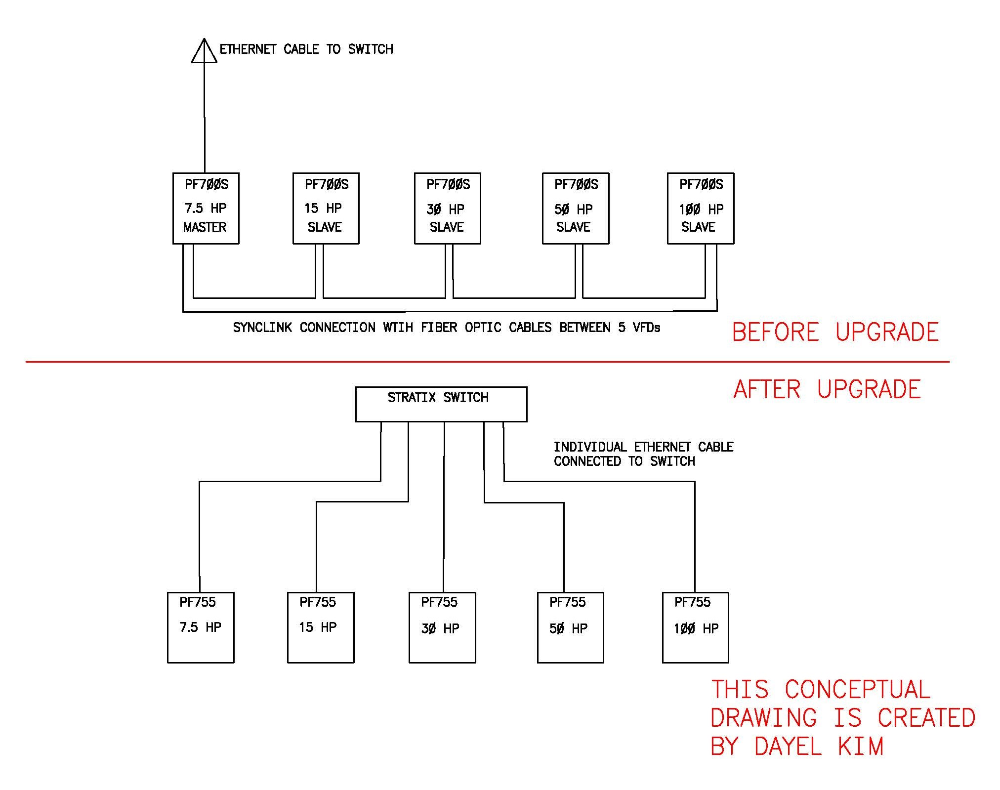

POWERFLEX 755 UPGRADE
Purpose
PowerFlex 700S VFDs are obsolete and cannot be purchased. We require a spare to keep the facility running in the event of VFD failure. The project scope is to replace 5 existing obsolete PowerFlex 700S VFD with 5 new PowerFlex 755 drives with CIP Motion Control VFDs
Drawing

Completed tasks by Dayel Kim
1. Received quote from System Integrator and project approval from management
2. Reviewed project proposal and drawings
3. Managed contractors
4. Supported startup/commissioning